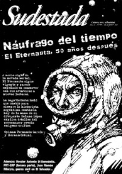

Buscar
Antonio Di Benedetto: La espera
A 20 años de su muerte, y a partir de la reedición de sus libros existe en la actualidad un leve reconocimiento de la obra literaria del escritor mendocino. Cinco puntos para entender la importancia del fenómeno Di Benedetto, con un estilo que hizo del compromiso estético-existencial su principal virtud.
Edición N° 57
Abril 2007
Revista bimensual
Comprar edición impresaSumario
- El Eternauta, 50 años después: Náufrago del tiempo
- Pulsión de vida
- Antonio Di Benedetto: La espera
- PRT-ERP: Apuntes de un sueño armado (Tercera parte)
- Julio Ramón Ribeyro: una vida con literatura
- El Salvador: de la guerra a la Krisis
Compartir Articulo
Uno. De olvidos, recuerdos y reconocimientos
Extraña historia la de Antonio Di Benedetto: su vida quedó entreverada en aquella primavera del 86, para ser más precisos el 10 de octubre de ese año, y a partir de allí, con el paso del tiempo, su marca parecía extinguirse. El olvido iba ganando esa batalla. Y es extraño, porque Di Benedetto fue un escritor de una calidad reconocida en vida, dentro y fuera de nuestras fronteras, y su obra literaria fue elogiada por su originalidad y pasión. Numerosos premios, becas y otras gratificaciones recibió en vida, lo que le permitió recorrer el mundo gracias a su trabajo. Parecía injusta tanta indiferencia durante los oscuros años noventa. Sin embargo, en esa fantasmal batalla que jugaron el olvido y el recuerdo en la obra de Di Benedetto, el último salió ventajoso, al menos por estos tiempos, al cumplirse los veinte años del fallecimiento del escritor mendocino.
Para los que lo extrañaban, octubre de 2006 les devolvió a Antonio por un largo rato. Octubre fue todo Di Benedetto, su obra, su estilo, su personalidad, su amor por el cine, su exilio, y el rescate de la importancia de su obra. Fue así que las páginas de cultura de los diarios, que generalmente se ocupan de vender best-sellers, se equivocaron y volvieron a nombrar sus principales creaciones en un acto de homenaje merecido. Pero, ¿qué fue lo que ocurrió durante estos últimos veinte años? En los noventa, encontrar alguna novela de Di Benedetto en las librerías de Buenos Aires era una tarea difícil, sino imposible. Recién a partir de 1999, la editorial Adriana Hidalgo comenzó a reeditar sus principales textos. Era el tiempo en que Juan José Saer intentaba infructuosamente el rescate de su obra. Por otro lado, se profundizaba el análisis de su narrativa con obras como la de Jimena Néspolo, con Ejercicios de pudor, texto clave para analizar la complejidad de su obra. Pero, sin embargo, la mirada a su trayectoria parecía quedar reducida al ámbito universitario o a círculos cerrados de intelectuales.
El recuerdo de Antonio, se había convertido así en víctima de la espera. Espera del reconocimiento, espera del recuerdo de una obra que sigue motivando un mayor estudio y admiración
Dos. La espera y un estilo
La casa de Córdoba se encuentra vacía, se ve solo una cama, un escritorio con una máquina de escribir y una pila de hojas en blanco iluminadas por el sol, que ingresa furioso por el ventanal. El escritor se enfrenta a un desafío: 18 días para terminar una novela. Ni un días más. Ese es el tiempo de licencia de trabajo que le fue otorgado por el diario en el cual cumple funciones de redactor. Llegó a Córdoba, con la idea de empezar y terminar una novela. No hay tiempo para dudar. Los días pasaban y no lograba el objetivo. Mientras la urgencia le ganaba de mano, las aventuras de Don Diego de Zama iban tomando forma. El escritor seguía tecleando en su máquina. El sonido de la tecla contra el papel retumbaba en la casa desolada, en la que ahora habitaban el escritor y la víctima de la espera. Entre la casi obsesiva y minuciosa corrección y sobrecorrección al texto, el tiempo lo corría y lo apremiaba, y dentro de esas hojas, el mismo tiempo se alargaba para Don Diego de Zama, sujetándolo a un desarraigo que se convertía en eterno y forzoso. Para el autor y el personaje, el paso del tiempo se había convertido en una condena: el escritor esperaba que el tiempo se detuviese, y Zama pretendía todo lo contrario. Ambos terminaron siendo víctimas del tiempo, porque al escritor no le bastaron los 18 días de licencia para finalizar la novela, por lo que debió robarle horas a su trabajo. Don Diego, en cambio, fue condenado a una espera eterna que estremeció hasta los cimientos de su misma existencia. Pese al apuro y a la urgencia con que fue escrita Zama -el nombre que llevaría la novela-, finalmente fue publicada en 1956, por Ediciones Doble P. A partir de la primera publicación de su novela, la crítica fue elogiosa, remarcando una y otra vez su originalidad.
Como bien señala Jimena Néspolo, Zama marcaría profundamente el estilo de Di Benedetto. La novela se ambienta en el siglo XVIII, en tierras paraguayas (aunque en la novela no aparezca el nombre del lugar donde se desarrolla la historia). Su personaje central, Diego de Zama, es un funcionario real que es trasladado a Paraguay, a la espera de un nombramiento de la Corona que lo lleve a otra ciudad de "mayor prestigio" (Buenos Aires, Lima o Madrid). La espera y la soledad del hombre se convertirían en el eje del relato. Esa dolorosa espera , y la soledad a la que es sometido Diego de Zama, van deshaciendo la misma existencia del personaje principal como ser humano, transformándolo en un ser despreciable, que abusa del poder, de las mujeres, de sus subordinados, mientras sigue esperando la llegada del barco que traiga finalmente la tan deseada orden de traslado a otra ciudad mayor...
(La nota completa en la edición gráfica de Sudestada)
Comentarios
Agustín Comas
Articulos más vistos


LIBRERÍA SUDESTADA

Colección infantil

Distribuidora de Libros

Suscripción

Sudestada en URUGUAY

Otros articulos de esta edición
 Nota de tapa
Nota de tapa
El Eternauta, 50 años después: Náufrago del tiempo
A medio siglo de la nevada mortal, el Eternauta sigue vigente y parece empeñado en conmover con sus aventuras a ...
 Antihéroes
Antihéroes
PRT-ERP: Apuntes de un sueño armado (Tercera parte)
Esta es la historia de Lionel MacDonald, o Pasto Seco, o Capitán Raúl. Referente estudiantil en Santa Fe, Lionel caminó ...
Pulsión de vida
"Y lo repito una vez más: hemos vivido por la alegría, por la alegría hemos ido al combate y por ...
 Nuestra América
Nuestra América
Julio Ramón Ribeyro: una vida con literatura
Escritor de culto en su país, hoy la crítica lo reconoce unánimemente como uno de los mejores cuentistas hispanoamericanos. Julio ...
 Entre líneas
Entre líneas
El Salvador: de la guerra a la Krisis
Los años setenta fueron tiempos de movilización popular, de represión y de guerrilla también en Centroamérica. Crónica de los orígenes ...